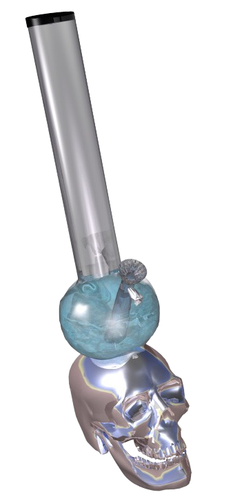

welcome to w33d.org
Virtual bong - click 2 smoke
..........ARE YOU A POTHEAD?..........
- if you set your clock to 4:20 ... then you're a pothead!
- if a say i forgot more than a couple of times a day ... than you're probably a pothead!
- if you own a bong collection thats worth more than your car... then you too are a pothead!
- if you have to smoke before after and between meals... then theres no dout you're a pothead!
- if you find your self late for every thing because you needed to smoke one more joint... then you're definitly a pothead!
- if some one says "hi" and your reply is hell yeah!... you're most likely a pothead!
- if you have seen all the cheech and chong movies than you're a true pothead!
- if you have ever named your pipe ... then you're an all out pothead!
- if you spend your time in front of your computer looking at weed sites ... then you're a pothead
- if you answered yes to any of the above...
Los Marijuanos
You got that shii right if you aint knowin i dont know what you been smokin the Los Marijuanos fro Chi Town been creapin fool you been to a weed fest as of late why didnt you holla at Pony Boy well you found the Underground Now so book mark the site ctrl+d this site is for the hard core weed heads ya dig